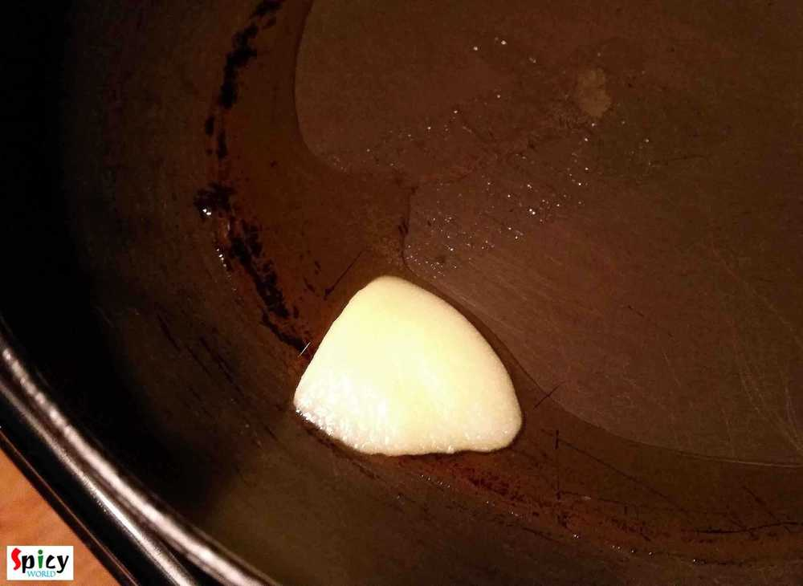
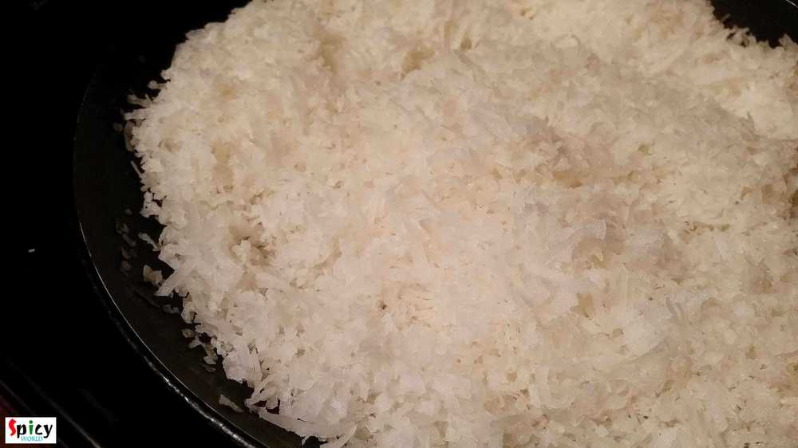
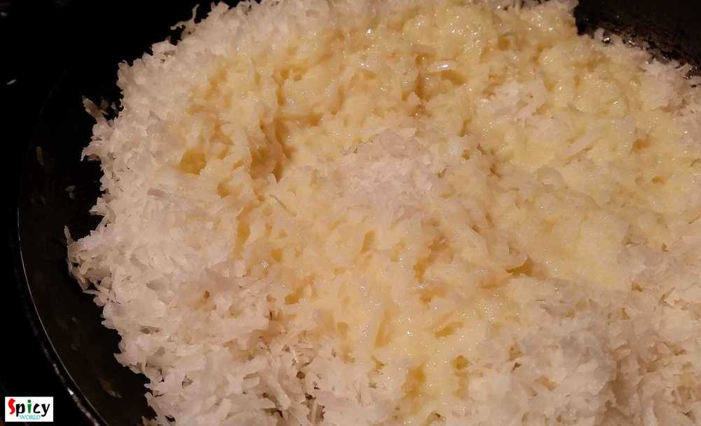
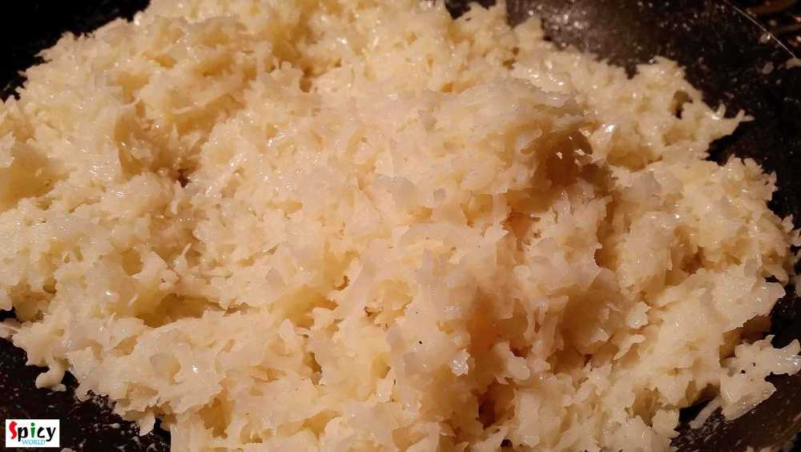
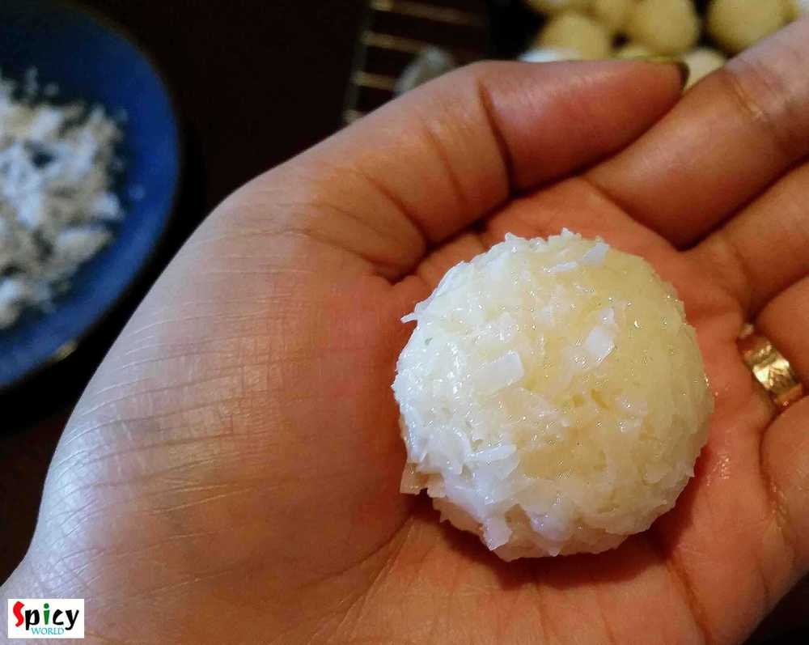
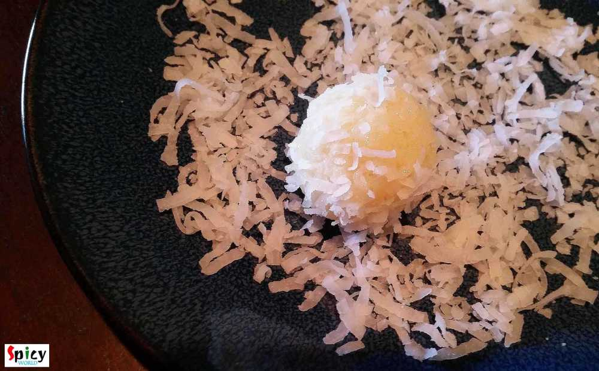

Simple and Easy Recipes
Instant Narkel Naroo / Instant Coconut Nadus
© 2016 Spicy World, Published on: Dec 1, 2015
I know making 'naroo' is a really time consuming task. Specially when you have puja in your house, there are several works to do. Here is the shortcut version of 'naroo', which you can make in 10 minutes. The recipe is so simple and needs very few ingredients. Naroo, made with fresh coconut, tastes heavenly. But believe me you will love these too. Try this in your kitchen and let me know how it turns out.

Ingredients
- 3 cups of coconut flakes (sweetend).
- half tin of sweetend condensed milk.
- 2 Teaspoons ghee / clarified butter.
- Some coconut flakes for coating.

Steps
Heat ghee in a non stick pan.
Add the coconut flakes. Roast them for 4 minutes.
Add the condensed milk. Mix it for 2-3 minutes.
Adjust the sweetness according to your taste.
Turn off the heat and let them cool down a bit.
Them make lemon size balls out of them.
Roll the balls in some coconut flakes for coating.
Your Coconut Nadoo is ready ...
Enjoy this quick dessert with your loved ones ...
")